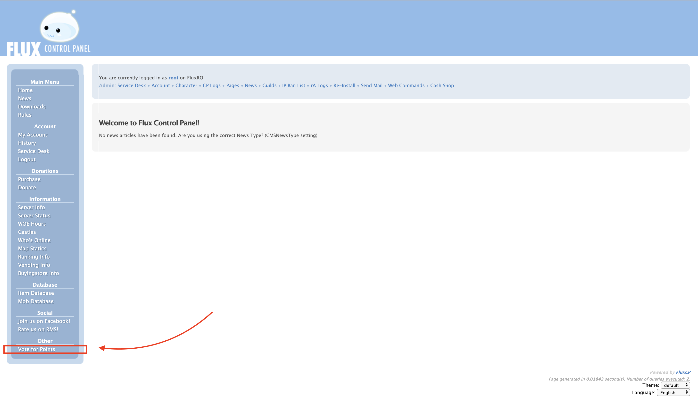
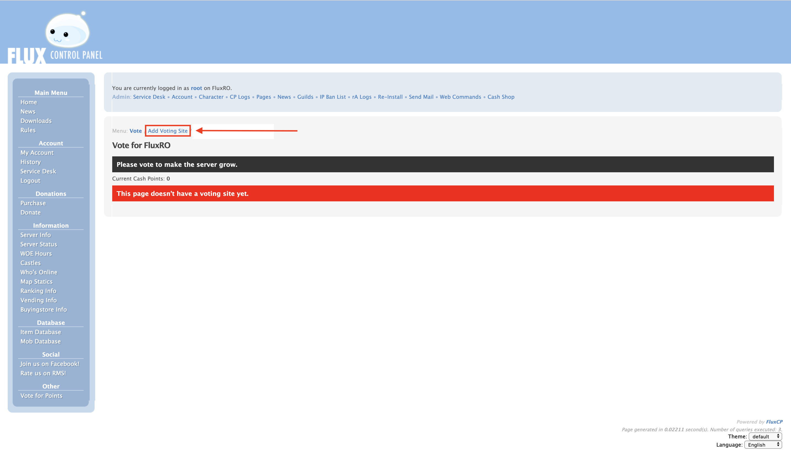
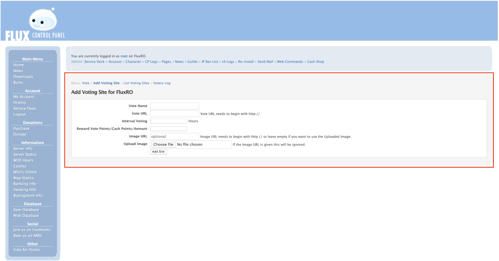
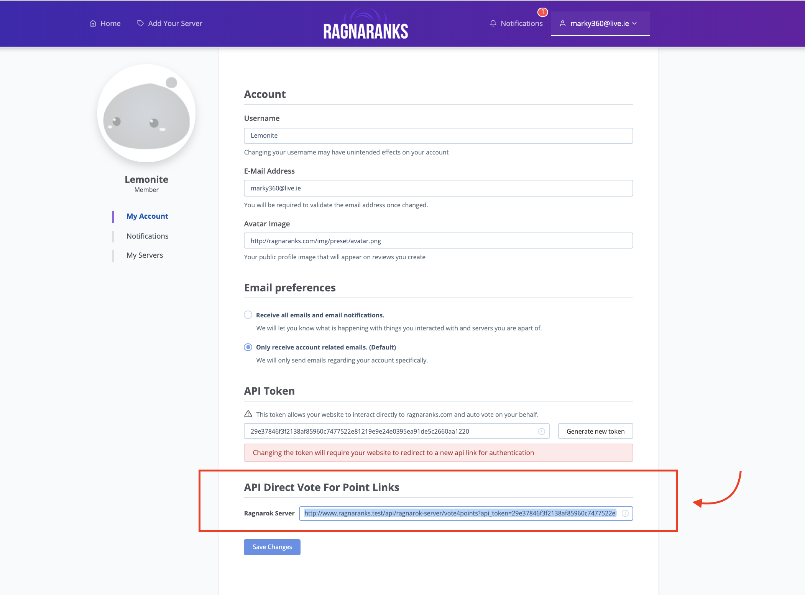
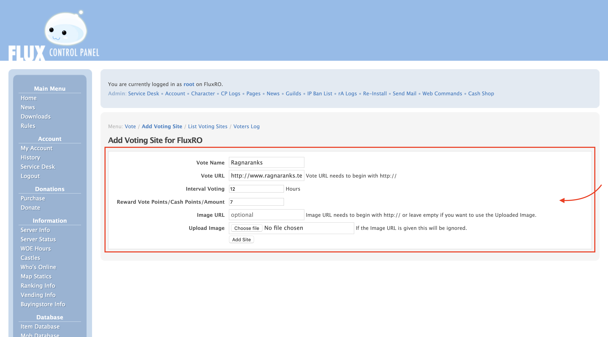
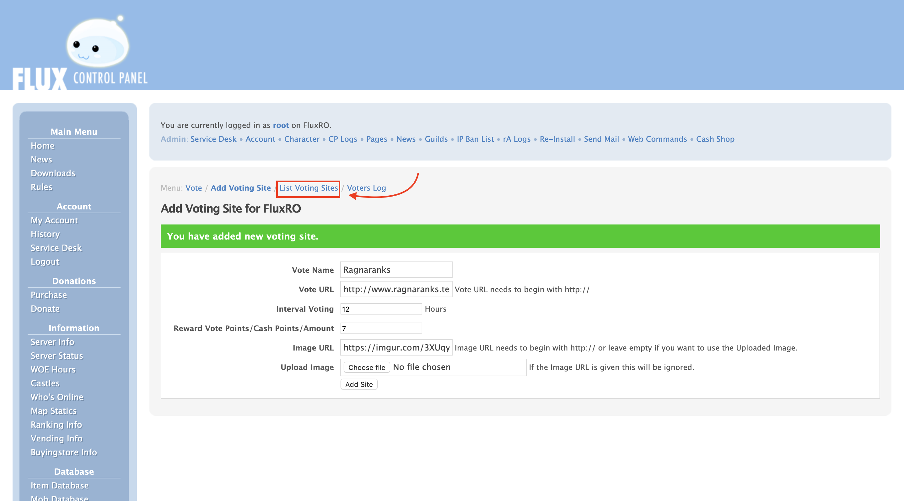
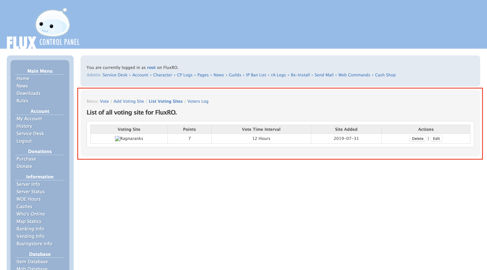

Contents
Introduction
Before you follow this guide, please make sure you have Created a Listing. This step is important as you will require a uniquely generated API link.
Our API system is built with the idea of simplicity, a minimalistic approach to setup and usage, it is of great concern that many vote for points systems that are currently being used do not use any sort of json call-backs or any tracking to validate the users actually vote once they click the link, your website in return rewards players points for the click and not the voting, Our API system aims to implement a unique way of correcting this problem, once a user clicks a link to vote, you can be safe in knowing that that click actually mattered, and their vote was contributed towards your server listing, this is done by using a uniquely generated API token that exists only for your account, that allows your website to authenticate itself and vote on your behalf, each vote is tracked by IP Address, meaning even with authentication, anyone can vote for your listing. To make things even easier we have created a guide with images that you can follow to successfully use such feature.
Getting Started
- First things first, using your flux control panel click the
vote for pointsmodule. 
Adding a Vote Site
- Next we must add a new voting site, this can be done using the menu presented underneath your admin actions. 
Vote site configuration
- Now the easy part, adding ragnaranks to your vote list, To complete this we must enter some information that corresponds to our website and your specific instance that was created there. 
- Visit My Account on Ragnaranks.com and scroll down to
API Direct Vote For Point Linkssection, this will display a list of your currently created sites and the uniquely generated link that has been made just for your listing, you will need to copy the link inside the input textbox that corresponds to the listing you wish to have direct interaction with on yourvote for pointsmodule, this will be used as the information required on the flux cp panel.vote url, example url of how it should look is as follows:http://www.ragnaranks.test/api/ragnarok-server/vote4points?api_token=29e37846f3f2138af85960c7477522e81219e9e24e0395ea91de5c2660aa1220 - Last step is to finally fill in the information using the api link we retrieved in the last step and by setting up the time constraint and reward amounts, our server as of this current time allows votes every
12 hours&recommended value of 7 points, this is subject to change so its in your best interest that you keep up to date by following our facebook page, the image url should resemble your own website design and layout as such please add a suitable image.  - Finishing up the form, you are required to select add site, allowing your new entry to be pushed to your collection of other vote for point sites.

Finishing Up
- Once you have successfully added the new vote site by following the guide in the above section, you should select the
Listing Voting Sitesbutton found on the menu, underneath the admin control action, this will present a list of all the available vote sites on your website that players can interact with.  - And that’s everything, you should now see your new vote site added to your website and functioning correctly ! 